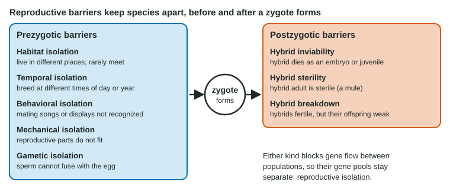

Every node on a tree of life marks a moment when one population became two separate lines. This page explains what makes two groups separate species, the barriers that keep species apart, the two main ways a population splits (with a barrier between its parts, or without one), and the patterns that speciation leaves in the history of life.
What is a species?
The biological species concept defines a species as a group of populations whose members can interbreed in nature and produce viable, fertile offspring, and cannot do so with members of other groups. The key idea is gene flow: members of one species share a gene pool, and different species do not.
Looks can mislead. Dogs as different as a chihuahua and a Great Dane are one species. Gray tree frogs of two species look identical, but one is tetraploid and the two do not interbreed; females pick mates by call. So the biological species concept judges by reproduction, not appearance.
It has limits. It cannot be applied to fossils, and it means little for organisms that reproduce asexually, such as bacteria. For these, biologists use the morphological species concept, which groups organisms by body form and structure, often backed by DNA comparisons.
Reproductive barriers

Reproductive isolation is what keeps species separate. It comes from barriers that act before or after a zygote forms (Figure 1).
| Barrier | When it acts | What happens | Example |
|---|---|---|---|
| Habitat isolation | Prezygotic | Different places within one area; rarely meet | Apple and hawthorn flies mate on their own host fruit |
| Temporal isolation | Prezygotic | Breed at different times of day or year | Two plants that flower in different months |
| Behavioral isolation | Prezygotic | Mating signals not recognized | Frogs whose females respond only to their own species' call |
| Mechanical isolation | Prezygotic | Reproductive parts do not fit | Snails with shells coiling in opposite directions |
| Gametic isolation | Prezygotic | Sperm and egg cannot fuse | Sea urchins whose sperm proteins fit only their own species' eggs |
| Hybrid inviability | Postzygotic | Hybrid dies as an embryo or young | Some salamander hybrids stop developing |
| Hybrid sterility | Postzygotic | Hybrid adult is sterile | Mule (horse × donkey) |
| Hybrid breakdown | Postzygotic | First hybrids fertile, their offspring weak or sterile | Some rice and cotton crosses |
A mule shows why a hybrid is not enough to make two parents one species. Horses have 64 chromosomes and donkeys 62, so a mule has 63. Its chromosomes cannot pair properly in meiosis, so it makes almost no working gametes. No genes flow from the mule back into either parent's gene pool.
Allopatric speciation: separated by a barrier
![Top row, allopatric speciation: one population shares genes freely; a river changes course and splits it in two; with no gene flow, each side evolves separately; when the barrier is gone, the two live together but no longer interbreed. Bottom row, sympatric speciation by polyploidy: a diploid plant (2n = 14) has a meiosis failure giving gametes with 14 chromosomes; self-fertilization gives a tetraploid (4n = 28) with gametes of 14. A tetraploid crossed with a diploid gives a triploid with 21 chromosomes, which is sterile because three copies of each chromosome cannot pair evenly in meiosis.](../figures/speciation-modes.svg)
In allopatric speciation, a geographic barrier splits a population (Figure 2, top):
- A river changes course, a mountain range rises, sea level rises and cuts off an island, or a few individuals colonize a distant island.
- Gene flow between the parts stops.
- Each part gets different mutations, its own genetic drift (strong if it is small, as after a founder event) and its own selective pressures.
- The gene pools change in different directions. Some changes happen to affect reproduction: a mating song, a breeding season, how hybrid genes work together.
- If the barrier later disappears, the populations meet but no longer interbreed successfully. They are separate species.
Squirrels on the two rims of a deep canyon, fish in lakes that were once connected and birds on separate islands all show the early or late stages of this process.
Sympatric speciation: no barrier needed
In sympatric speciation, reproductive isolation arises within one area (Figure 2, bottom).
- Polyploidy, common in plants: an error in meiosis produces gametes with a full double set. If two such gametes join, or the plant self-fertilizes, the offspring is tetraploid. It can breed with other tetraploids, but a cross with a diploid gives a triploid, whose three copies of each chromosome cannot pair evenly in meiosis, so it is sterile. A new species can appear in one generation. Many crops, including wheat, potatoes and cotton, are polyploid.
- A new food or habitat in the same place: apple maggot flies that use apples mate on apples and emerge earlier than hawthorn flies, so habitat and temporal isolation reduce gene flow even on neighboring trees.
Worked example: chromosome counts in polyploid crosses. A diploid wildflower has 2n = 14.
Step 1. Gametes. Diploid gametes have n = 7. A tetraploid (4n = 28) makes gametes with 28 ÷ 2 = 14. Step 2. Cross. Diploid × tetraploid gives 7 + 14 = 21 chromosomes: three copies of each of the 7 kinds (triploid). Step 3. Meiosis. Each set of three homologs splits two-and-one at random, so almost every gamete gets an unbalanced number. Step 4. Conclude. The triploid is sterile, a postzygotic barrier between the tetraploids and their diploid parents.
Hybrid zones
When two related populations meet and interbreed, the area where hybrids form is a hybrid zone. Three outcomes are possible:
- Reinforcement: hybrids are less fit, so individuals that mate with their own kind leave more fertile offspring, and prezygotic barriers grow stronger where the two meet.
- Fusion: hybrids do well and barriers weaken, until the two gene pools merge.
- Stability: hybrids keep forming in a narrow zone for a long time.
Reinforcement leaves a telltale pattern: two species reject each other more strongly where they live together than where they live apart.
The pace and patterns of speciation
The fossil record shows two patterns. In gradualism, species change slowly and steadily. In punctuated equilibrium, species stay nearly the same for long periods (stasis) and change rapidly over short spans, often around speciation. Rapid change fits speciation in small, isolated populations, where selection and drift act quickly; stasis fits stabilizing selection in large, established species. Both patterns occur.
An adaptive radiation is the rapid rise of many species from one ancestor as its descendants fill many different niches, the different roles and ways of life available. Radiations often follow an opportunity: reaching new islands with few competitors, as Galápagos finches and Hawaiian honeycreepers did, or the open niches left after a mass extinction, as mammals diversified after the dinosaurs other than birds died out.
Speciation, radiations and extinctions are macroevolution: evolution at and above the level of species. It is built from the same processes as change within populations (mutation, selection, drift and gene flow), acting over long times.